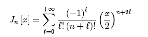

The Bessel functions Zν[x] are solutions to the a differential equation
There are three kinds of Bessel functions. Bessel functions of the first kind have integer or half-integer order and are labeled Jn[x]. and have finite amplitude for positive x. The "Bessel functions of the second kind" (also called the Neumann functions) are denoted by Nν[x] and have indeterminate amplitude at x = 0. The third type of solution to Bessel's differential function is the Hankel function, a complex-valued linear combination of the first two types.
For positive integer values of n, the Bessel function of the first kind may be written as the series

Parameters:
Support: infinite
Area: varies.
Symmetry: even.
Read more about Bessel functions at: